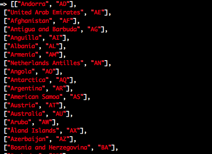

Console Tricks
&
Entwickler Shortcuts⚡
... wie war es nochmal?
Verlauf
fuzzy finder
https://github.com/junegunn/fzf
history
hist (history)
hist --all (-a)
hist -T (--tail) 20
hist -G (--grep) (REGEX)
hist -r (--replay) 14..16
hist -n (--no-numbers)
# "hh", "hist -a -T30"
# "hn", "hist -a -T30 -n"
# "hg", "hist -a -G"
# "hr", "hist -a -r"
# CTRL + R
Copy/Paste
Verkleinerung der Schriftgröße
|  |
pbcopy / pbpaste
foo = '123'
`echo #{foo} | pbcopy`
`echo #{ISO3166::Country.all} | pbcopy` ❌
IO.popen('pbcopy', 'w') { |f| f << ISO3166::Country.all }
bar = `pbpaste`
Pry-Clipboard
# gem 'pry-clipboard'
Clipboard.copy Array.methods
foo = Clipboard.paste
# "cc", "copy-history -T -2 -l" # input und output
| sublime | copy-clip |
|---|---|
Output
Darstellungsmöglichkeiten
puts #foo.to_sp #foo.inspectpp # pretty printj/jj # pretty json
Tabellarische Daten
_table Question.limit(5), fields: %i(id questionnaire_id text)
+----+------------------+-------------------------------------+
| id | questionnaire_id | text |
+----+------------------+-------------------------------------+
| 1 | 6 | Iste sint a cumque consectetur. |
| 2 | 7 | Omnis animi ea architecto reicie |
| 3 | 8 | Facere ut nihil nisi eaque praes... |
| 4 | 9 | Eum et incidunt veritatis ut. |
| 5 | 10 | Non voluptatem praesentium sint ... |
+----+------------------+-------------------------------------+
_table [['foo', 'bar', 'baz'], [1,2,3], [4,5,6]]
_table [{foo: '1', bar: '2'}, {foo: '3', bar: '4'}]
_table (1..3).map {|i| i.days.from_now }, :fields=>[:to_s, :year, :month, :day]
Inspektoren
list-inspectors
change-inspector # default, simple, clipped
# custom: awesome, hirb, special_cases
Inspektoren - Sonderfälle
Pry::Inspector::MAP['default_with_special_cases'] = {
description: 'provides extra info for some models',
value: proc do |output, value, _pry_|
case value
when User
puts "\e[34m #{ value.role } #{ value.email } \e[0m\n -------- \n"
end
Pry::DEFAULT_PRINT.call(output, value, _pry_)
end
}
Prompt
prompts
list-prompts
change-prompt # simple, nav, none
# custom: rails_app, memory
Umgebung Prompt
Arbeitsspeicher Prompt
Farben
Farbcodes
http://stackoverflow.com/questions/1489183/colorized-ruby-outputWarnungen
be rails c The meta-request gem can cause a SystemStackError: stack level too deep when saving a shop record. See https://github.com/rgeo/activerecord-postgis-adapter/issues/81 Loading development environment (Rails 4.2.6)
Emoji! ü¶Ñ
Debugging
Erkunden
show-source
ls
cd
find-method
Foo._tab_autovervollstaendigung
edit -p Foo # $EDITOR
docs / modelle
# gem 'pry-doc'
? Array#reduce (alias show-doc)
show-middleware
show-model
show-models
show-routes
binding.pry
whereami
caller
# gem 'pry-byebug'
# break, step, next, finish, continue
# backtrace, up, down, frame
better errors
Warten
Benachrichtigungen nach langen Prozessen
# gem 'terminal-notifier'
def ping_when_finished(&block)
block.call if block_given?
`say fertig`
`terminal-notifier -message "finished" -sound default -timeout 5`
end
tqdm
https://github.com/powerpak/tqdm-rubyKonfiguration
.pryrc
- isolieren
- eingebautes Cheatsheet
Abkürzungen
Find My Dev
module FindMyDev
def fer
self.find_by(first_name: "Fernando", last_name: "Sainz")
end
def important_client
# ....
end
end
User.extend(FindMyDev) if Rails.env.development?
Find My Dev
User.fer
City.bonn
Company.haribo
# ...
Dev Tools Leiste
Dev Tools Leiste
- Routes
- Emails
- Sidekiq
- Styles
- Sprachenschalter
- Impersonieren / Role Switch
- Zeitreisen
1 click Setup
Danke!
Fernando Sainz fsainz.com